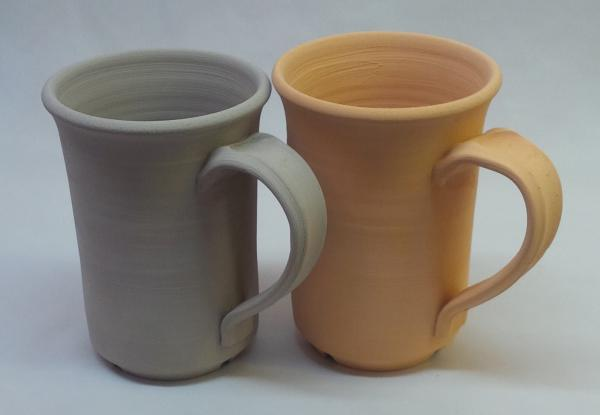
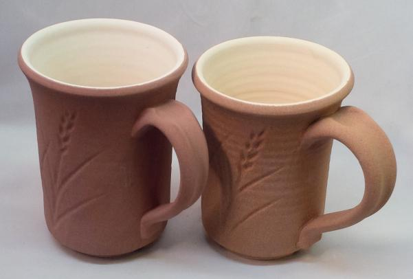
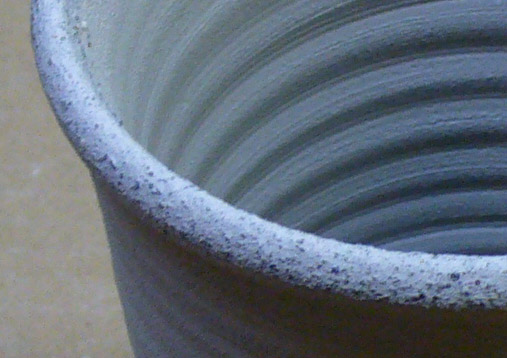
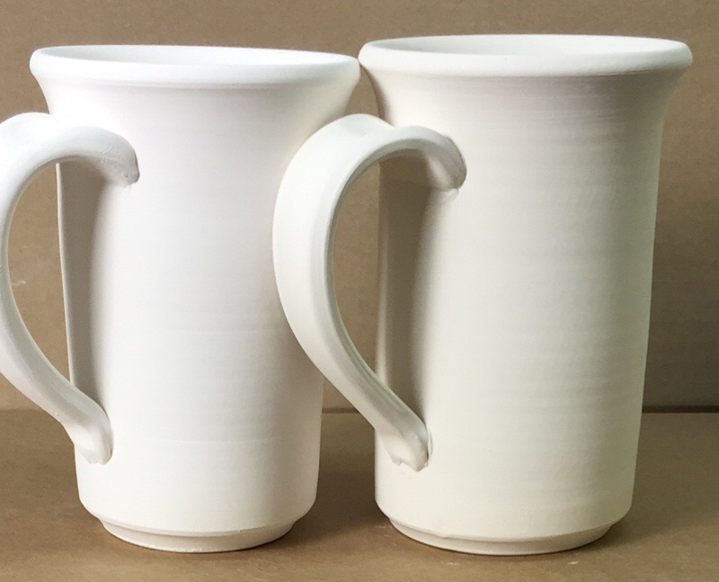
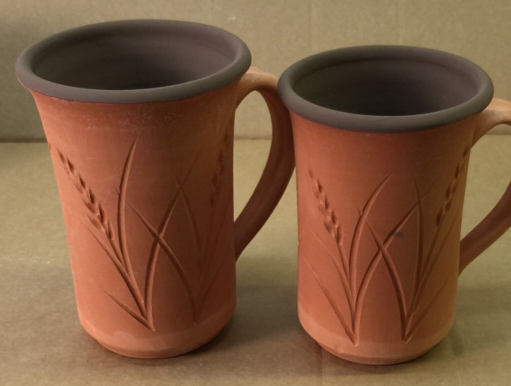
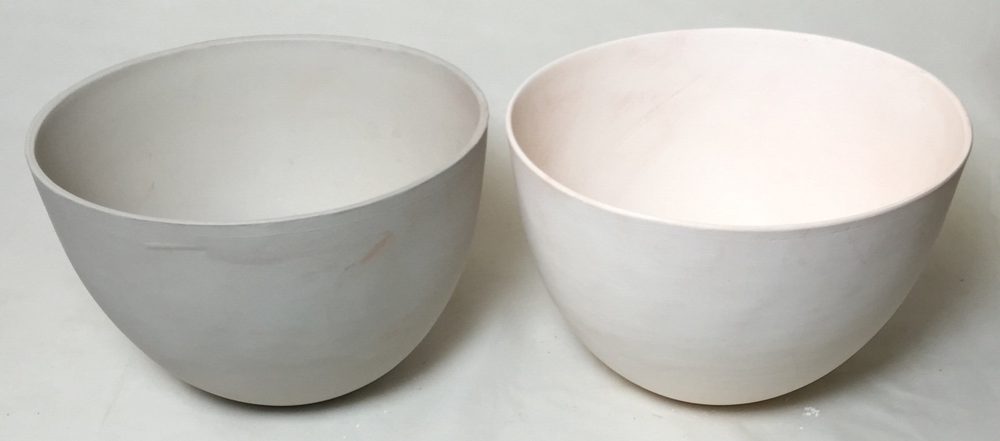
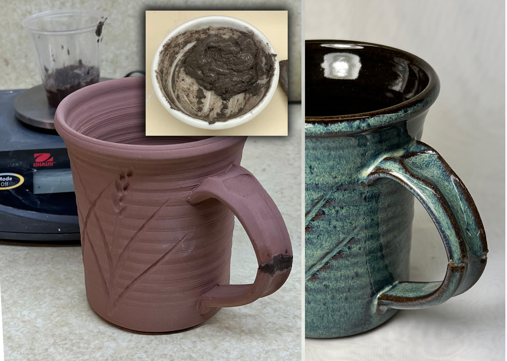
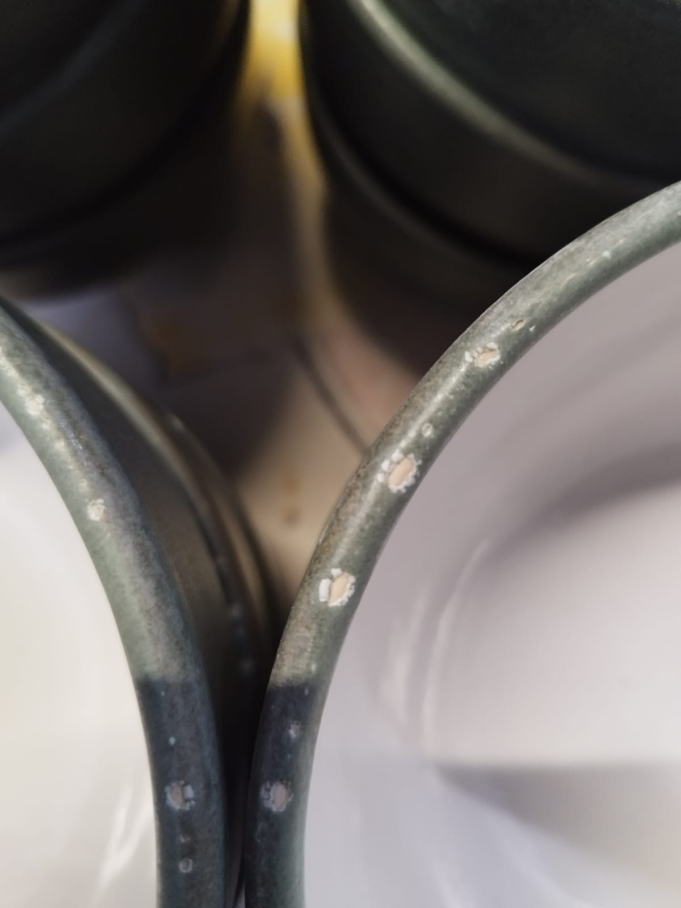
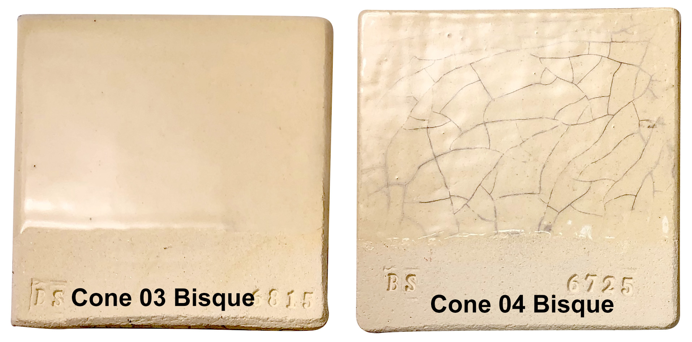

Bisque
Potters and some manufacturers fire ceramic ware twice, once to prepare it for glazing (call bisquit firing) and the second time to melt the glaze onto it.
Key phrases linking here: bisquit firing, bisque firing, bisque fired, bisque-fired, bisque - Learn more
Details
Generally, bisque firing refers to the practice of prefiring ware without glaze to make it impervious to water, resistant to damage during handling and absorbent for glazing. The porosity of the bisque (generally more than 15%) makes it an ideal medium to absorb water from the glaze suspension and hold it in place, it is typical for the glaze to dry sufficiently for handling in just a few seconds. The temperature of the bisque firing can be adjusted to tune the degree of porosity, and therefore the glazing characteristics. Bisquit should be fired as high as possible. Some companies fire high enough to get some glass formation so the ware has extra strength to resist cracking during fast firing. The Bisque also needs to be low enough to provide sufficient absorbency to make glaze application easy. Less porous ware can be successfully glazed by reducing water content of the glaze suspension, heating the ware before immersion in the glaze, additions of binders or flocculants, applying a thinner layer, etc.
Firing bisquit as high is possible is desirable for another reason: Higher temperatures and longer soaks burn off more products of decomposition, which produces more defect-free glaze surfaces in the final firing (since not as many gases need to bubble up through the melting glaze). In many situations, bisque temperature can be increased by 1 or 2 cones with little impact on the production process. In most situations, the bisque can be soaked at the end to provide more time for gas expulsion. Heavier ware needs to be soaked longer, sometimes a lot longer (hours) to fully drive out gases of decomposing organics and carbonates.
'Low' bisque firing is typical for pottery and ceramics while a 'vitrifying bisque' is done for bone china and some types of stoneware.'High' bisque firing is done to mature the body and burn off all the organics. Subsequent firing is usually done to apply a low-fire glaze. Glazing zero-porosity (or very slow porosity vitrified ware) is a challenge, such glazes must have special additives to make them gel and stick to the ware (i.e. calcium chloride, gum) and the production process is able to handle the extended drying time.
At times adjustments to bisque firing are recommended to solve problems like crazing. However crazing is caused by a thermal expansion mismatch between body and glaze, bisque firing is not related to this, it is at best a band-aid fix for marginal crazing situations, the crazing will appear with time anyway.
Some people wash bisque ware so that it is “clean” before glazing. But the real issue is absorbency. Bisque ware is a porous ceramic sponge. Its job during glazing is to suck water out of the slurry quickly and evenly, leaving behind a stable layer of particles on the surface. That rapid water extraction is what makes dipping practical. If the bisque is damp from washing, the suction is weakened. The glaze then stays fluid longer, drips more and dries slowly. What about dust? A light coating of ordinary ceramic dust is usually made of the same minerals as the ware and glaze itself. During dipping, the incoming water instantly penetrates and bonds through that dust layer and incorporates it. Washing trades a tiny and often harmless surface contaminant for a more serious problem: partially saturated pores. Of course, there are exceptions. Thick dust, sanding debris, greasy fingerprints, plaster contamination, or loose crumbs can cause defects and should be removed. But compressed air, a soft brush, or a barely damp sponge used sparingly are better solutions because they preserve the essential dryness.
(which causes crawling). But it is better to bisque higher (for less absorbency) or examine the glaze recipe and fix that. Glazes that have too little clay or have not been gelled can build a layer much more quickly. Glazes that have too much clay tend to crack during drying, then crawl during firing (calcine some of the clay to fix this). When the glaze has the right rheology and the bisque is the right density glazing will be much better.
Some people go to great efforts to keep dust off bisque ware before glazing. However, remember that glaze is a mixture of mineral dust and water so you are removing a small amount of dust and replacing it with a lot more.
Related Information
A dried terra cotta mug on the left, bisque fired to cone 06 on the right

This picture has its own page with more detail, click here to see it.
These were fired to cone 06, about 1800F. Of course, there is normally some shrinkage so the bisque piece would be a little smaller. Even though the matrix is very porous and is under developed, the iron in the body is already beginning to impose its color.
Why would you bisque fire glazed ware? For transport for glaze firing.

This picture has its own page with more detail, click here to see it.
These are high temperature stoneware mugs that have been bisque fired, glazed and then bisque fired again to cone 02. This is done so they can be handled without damage (they are being shipped to another location for firing to cone 10R). The glaze is quite durable at this point and would be difficult to damage.
Cone 6 glazes can seal the surface surprisingly early - melt flow balls reveal it

This picture has its own page with more detail, click here to see it.
These are 10 gram balls of four different common cone 6 clear glazes fired to 1800F (bisque temperature). How dense are they? I measured the porosity (by weighing, soaking, weighing again): G2934 cone 6 matte - 21%. G2926B cone 6 glossy - 0%. G2916F cone 6 glossy - 8%. G1215U cone 6 low expansion glossy - 2%. The implications: G2926B is already sealing the surface at 1800F. If the gases of decomposing organics in the body have not been fully expelled, how are they going to get through it? Pressure will build and as soon as the glaze is fluid enough, they will enter it en masse. Or, they will concentrate at discontinuities and defects in the surface and create pinholes and blisters. Clearly, ware needs to be bisque fired higher than 1800F.
Lignite can be big trouble

This picture has its own page with more detail, click here to see it.
Example of the lignite particles in a fireclay (Pine Lake) that have been exposed on the rim of a vessel after sponging. This is a coarse clay, but if it were incorporated into a recipe of a stoneware, glaze pinholing would be likey.
Oversize particles in a typical manufactured porcelain body

This picture has its own page with more detail, click here to see it.
Example of the oversize particles from a 100 gram wet sieve analysis test of a powdered sample of a porcelain body made from North American refined materials. Although these materials are sold as 200 mesh, that designation does not mean that there are no particles coarser than 200 mesh. Here, there are significant numbers of particles on the 100 and even 70 mesh screens. These contain some darker particles that could produce fired specks (if they are iron and not lignite); thank goodness in this case they do not. Oversize particlate is a fact of life in bodies made from refined materials and used by potters and hobbyists. Industrial manufacturers (e.g. tile, tableware, sanitaryware) commonly process the materials further, slurrying them and screening or ball milling; this is done to guarantee defect-free glazed surfaces.
How much does clay shrink when bisque fired?

This picture has its own page with more detail, click here to see it.
Not much. These mugs were exactly the same height before a bisque firing to cone 06. The clay is a porcelain made from kaolin, feldspar and silica.
Lignite contamination in manufactured porcelain body

This picture has its own page with more detail, click here to see it.
These contaminating particles are exposed on the rim of a bisque-fired mug. The liqnite ones have burned away but the iron particle is still there (and will produce a speck in the glaze). Remnants of the lignite remain inside the matrix and can pinhole glazes. Since ball clays are air floated (a stream of air takes away the lighter particles and the heavier ones recycle for regrinding) it seems that contamination like this would be impossible. But the equipment requires vigilance for correct operation, especially when there is pressure to maximize production. Ores in Tennessee are higher in coal than those in Kentucky. North American clay body manufacturers who confront ball clay suppliers with this contamination find that ceramic applications have become a very small part of the total ball clay market - complaints are not taken with the same seriousness as in the past.
Can you bisque fire at cone 02? Yes. But why? How?

This picture has its own page with more detail, click here to see it.
The buff stoneware mug on the right was bisque fired at cone 02, the one on the left at cone 06. The cone 02 mug was immersed in the clear glaze for 1 second and allowed to dry. The other was glazed on the inside first, allowed to dry, then glazed on the outside with a 1 second dip. Of course, the cone 02 one took longer to dry. In spite of this, the glaze is thicker and more even on the one bisque fired to cone 02. How is the possible? The secret is the thixotropy of the glaze. When that is right, a one second dip will give the same thickness and evenness whether dry or bisque, 06 or 02. Why bisque fire to cone 02? To get a glazed surface free of pinholes on some stoneware clays.
Does bisque ware need washing for glazing?
No. These pieces demonstrate why.

This picture has its own page with more detail, click here to see it.
A light coating of ordinary ceramic dust is made of the same minerals as the ware and glaze itself. During dipping, the incoming water instantly penetrates and incorporates surface dust. Glaze are dust mixed with water! However, washing trades a tiny and often harmless surface contaminant for a more serious problem: partially saturated pores. Bisqueware is a porous ceramic sponge. Its job during dip glazing is to suck water out of the slurry quickly and evenly, leaving behind a stable layer of particles on the surface. If the bisque is damp from washing, the suction is weakened. Of course, there are common-sense exceptions, but compressed air, a soft brush, or a barely damp sponge used sparingly are better cleaning solutions to preserve the essential dryness.
These thin-walled mugs demonstrate: Just pour-glazing the inside has waterlogged them, they must be dried before applying the outside glaze. Imagine if they had been washed also!
Bisque temperature can be lower than you think

This picture has its own page with more detail, click here to see it.
These bowls are made from a talc:ball clay mix, they are used for calcining Alberta and Ravenscrag Slips (each holds about one pound of powder). The one on the right was bisque fired to cone 04 (about 1950F). The one on the left was fired to only 1000F (540C, barely red heat), yet it is sintered and is impervious to water (strong enough to use for our calcining operations). That means that there is potential, in many production situations, to bisque a lot lower (and save energy). Primitive cultures made all their ware a very low temperatures. Tin foil melts at 660C (1220F) yet can be used on campfires for cooking (so the temperatures of primitive wares would have been low indeed).
Bisque-fix/kiln-patch made using sodium silicate and kyanite

This picture has its own page with more detail, click here to see it.
Traditional kiln patch or bisque fix products are made by mixing kyanite (with other powders) and sodium silicate. They leverage a special property of kyanite particles: They expand on firing, 5% or more. A 30:70 sodium silicate:kyanite mix shrinks only ~0.5% from wet to dry and ~1% from dry to cone 6. While 48 mesh kyanite has a particle size distribution (from fines to coarse) tuned to maximize density to take advantage of the expansion, that is still amazing.
To test, I tried filling the large gap in a bisque mug handle that was cracked completely in two. The kyanite mixes easily with the sodium silicate to form a cohesive material that can be formed (it hardens on surfaces, even your hands, quickly). Glaze coverage over it is poor, thus commercial products would contain other ingredients to make it more "ceramic" in nature (it should be able to tolerate being mixed with materials used to make porcelains and stonewares, in sufficient concentration its expansion will counter their shrinkage).
This is what happens when a kiln is bisque fired too fast

This picture has its own page with more detail, click here to see it.
In bisque kilns ware is being fired for the first time. If pieces are thick and the rate-of-rise is too fast then water (which is turning to steam) cannot escape fast enough. The internal pressure will fracture a piece like this that has not gone through a thermal drier. The schedule to fire this test brick was 150F/hr to 250 and hold 90, 200F/hr to 1640 no hold, 120F/hr to 1888 no hold. The fracture likely happened because the kiln schedule did not allocate enough hold time at 250°F or proceeded too fast to 1000°F. 250°F might sound like too high a temperature to do water smoking at because it is over boiling point, but in practice it does work in industrial kilns and driers with good airflow (which this kiln does not have).
Glaze crawling on single-fire - solved by bisque firing

This picture has its own page with more detail, click here to see it.
This problem only happened once in a while at a production pottery. On the rims of thick or thin pieces. The ware is glazed inside and out, the rim sponge-cleaned after each. Finally, the rim was dipped (after a period of drying). Glaze thickness and layering did not affect the appearance of the issue. They control glaze rheology carefully (according to specs). It appeared the problem had been solved when it was discovered that a worker was using hand cream and getting it on the rim while handling the ware (the touch points being the crawl points). Further, ware was not being kept clean and dust-free. But these were not the issue. In the end this was solved by bisque firing. Yes, they were glazing ware in the dry, or green state. The fact that they could accomplish this on thin-walled ware is amazing. Their experience is a testament to the value of bisque firing for smaller production facilities having limited equipment and resources.
Bisque temperature can make a big difference with fitting glaze at low fire

This picture has its own page with more detail, click here to see it.
This is Plainsman Buffstone with G2931L glaze fired at cone 06. A hotter bisque not only produces a stronger body but also eliminates crazing (these specimens were glaze-fired one month ago). Firing the bisque just one cone hotter has made the ceramic into a denser matrix having a higher thermal expansion. That has the power to put the squeeze on the glaze, preventing it from crazing. Hotter bisque temperatures can be problematic for dipping glazes (they reduce bisque absorbency and lengthen dip and drying times). But for low-temperature hobby ware, this is not as much of a problem since glazes are gummed and multi-coated (with air drying between each).
Note that bisquing higher has no effect on glaze fit for stoneware, since the glaze firing is done at a far higher temperature.
Inbound Photo Links
|
How much does the size of a piece change when it is bisque fired? Glaze fired? |
Links
| Typecodes |
Bisque Firing
|
| Media |
Manually program your kiln or suffer glaze defects!
To do a drop-and-hold firing you must manually program your kiln controller. It is the secret to surfaces without pinholes and blisters. |
| Glossary |
Rheology
In ceramics, this term refers to the flow and gel properties of a glaze or body suspension (made from water and mineral powders, with possible additives, deflocculants, modifiers). |
 PayPal | No tracking, No ads, No paywall, No transient content! Just organized, concise information constantly updated and improved. Was this helpful? Consider supporting me. |
| By Tony Hansen Follow me on        |  |
Got a Question?
Buy me a coffee and we can talk 

https://digitalfire.com, All Rights Reserved
Privacy Policy